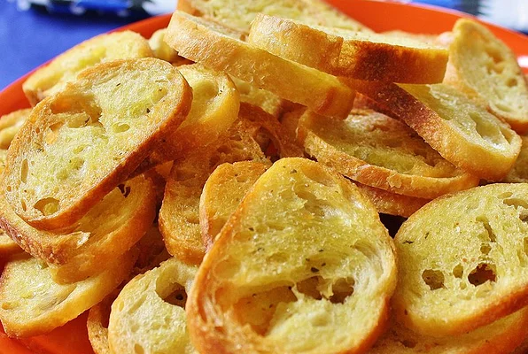

Crostini D'Emily
Tiny toasts to serve with a festive dip or baked garlic! Tiny toasts to serve with a festive dip or baked garlic!

ingridients
- 1 day old baguette
- ¼ cup butter, softened
- 1 tablespoon olive oil
- 3 cloves garlic, chopped
steps
- Preheat oven to 375 degrees F (190 degrees C).
- Slice the baguette crosswise into 1/4 inch thick slices
- In a small bowl, stir together the butter, olive oil, and chopped garlic. Spread the butter mixture onto each slice of the bread. Place the slices onto a cookie sheet buttered side up.
- Bake at 375 degrees F (190 degrees C) for 8 to 10 minutes, or until lightly toasted, and hard.
back to main page